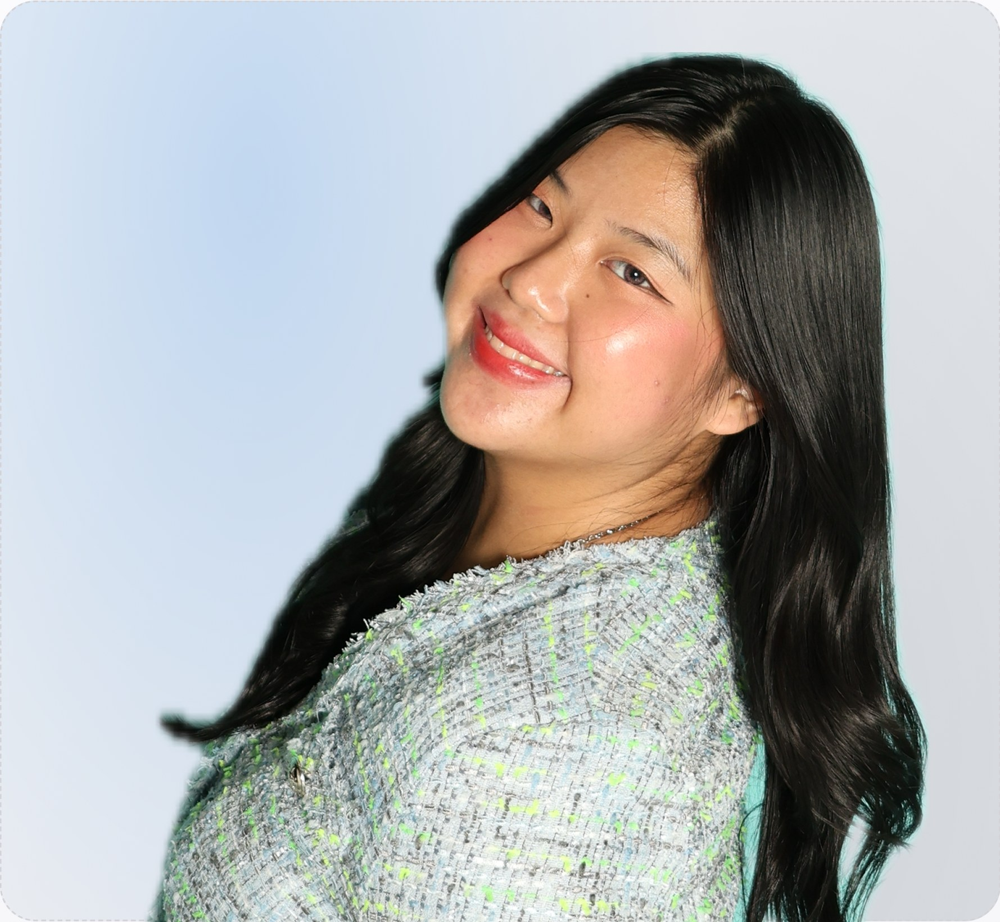
Information Systems student building at the intersection of cloud, data, design, and communication.
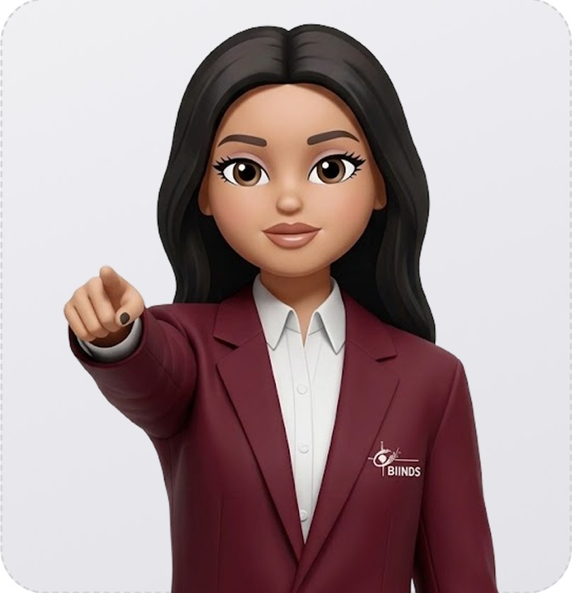
I'm an Information Systems undergraduate at BINUS University interested in where technology, creative storytelling, and design meet. A great digital experience should be functional, intuitive, and visually compelling — that's the standard I hold every project to, from cloud infrastructure to campus events.
Alongside my technical focus in Cloud Computing, I host, design, and document for BINUS University's Promotion Team and HIMSISFO, and I'm preparing for Business Case, UI/UX, and Business Plan competitions with the IS Case Study Club.
Competition case studies, app concepts, campus design work, and a few things in between.
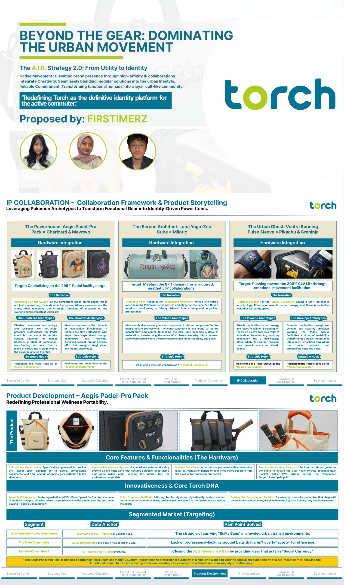
A brand growth strategy proposing that Torch, an urban gear brand, use high-affinity IP collaborations to turn functional bags and accessories into identity-driven pieces for Gen Z commuters.
My first-ever competition, entered as part of team FIRSTIMERZ at the campus level. I worked on market and consumer research — studying how Gen Z purchasing behavior responds to collaboration products — and contributed to shaping the case study's business logic and storyline.
Torch needed a way to stand out in a crowded urban-gear market and win over Gen Z, a generation that buys identity as much as utility. Our brief was to design a product and marketing strategy that could make that shift believable.
The proposal advanced to the semifinalist round — a strong result for a first competition, and validation that the research-driven approach we took to the case study held up under judging.
This was my very first taste of business case competitions, and my first time adapting quickly to a brand-new team. It taught me how to turn open-ended consumer research into a structured, defensible business argument — a foundation I've carried into every case study since.
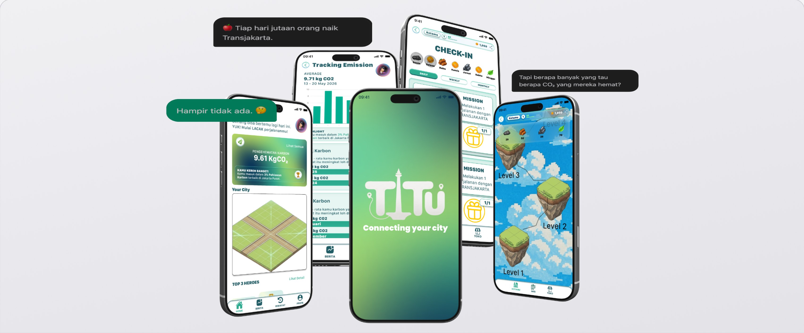
TITU is a civic-tech app concept that turns everyday Jakarta commuters on TransJakarta into city-builders — every ride they take feeds real CO₂ savings into a game where they build and grow their own miniature city.
A group project built with two classmates for the IOFEST competition, guided by the Information System Case Study Club. My part covered the concept and UI direction: shaping the Apple-inspired glass-morphism interface, designing the isometric pixel-art city assets, and helping translate the "commuting = city-building" idea into a working interactive prototype.
Millions of people ride TransJakarta every day, but almost none of them can see how much carbon they're actually saving by choosing public transit over a private vehicle. We wanted to make that invisible impact visible — and rewarding.
TITU was completed and submitted as our team's IOFEST proposal — a fully designed, interactive concept for encouraging sustainable commuting through gamification, built end-to-end within the competition timeline.
This was my second competition, and the one that taught me how much a clear timeline matters. We hit a genuinely chaotic time crunch mid-project, and pushing through it sharpened how I plan design work under pressure — locking down the idea and the visual direction early, instead of letting both drift until the deadline.
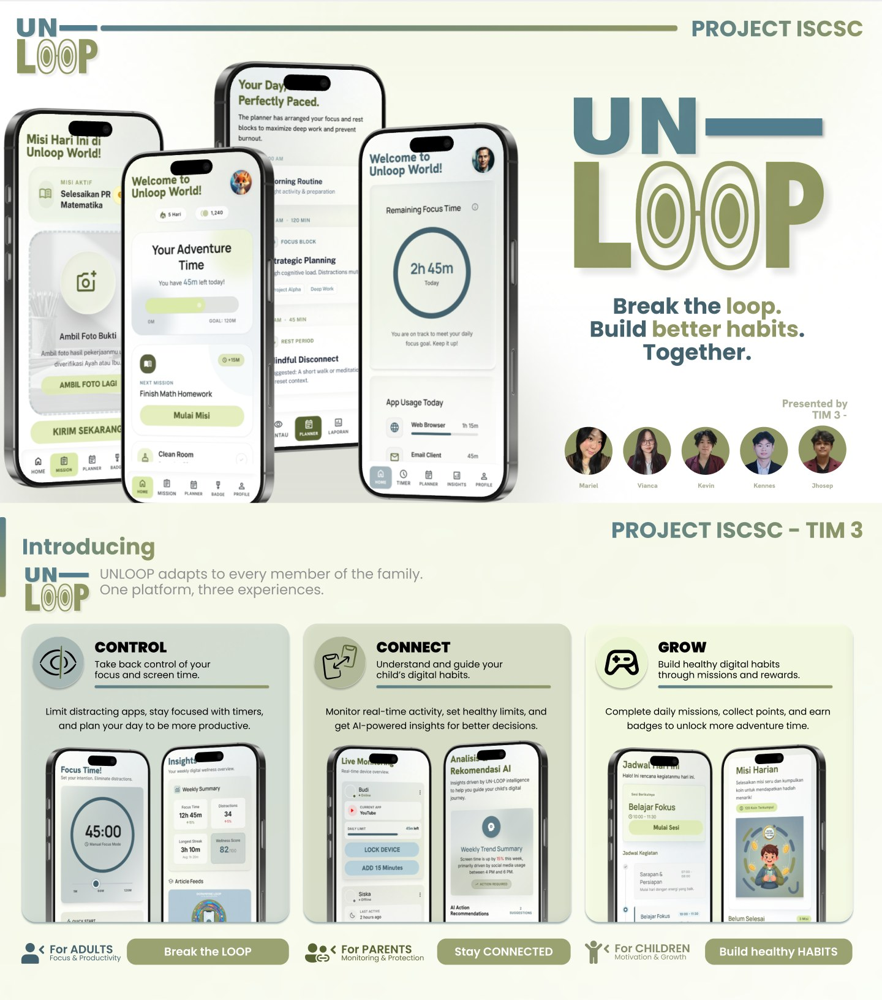
Un-Loop is a gamified parental-control concept that tackles doomscrolling among Indonesian teens by turning healthier screen habits into a game both kids and parents want to play.
Designing for two very different users at once — a teen who wants autonomy and a parent who wants visibility — pushed me to think harder about permissions, tone, and trust inside a single product, rather than designing one flow and copy-pasting it twice.
Where I've worked and what I picked up along the way.
Represent the university at promotional events and expos, where I've hosted TikTok Live sessions on scholarships and campus life and designed the visual marketing content that supports them.
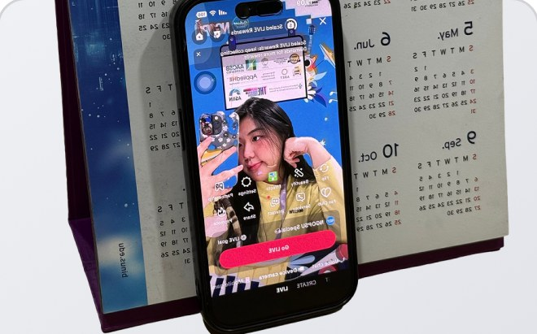
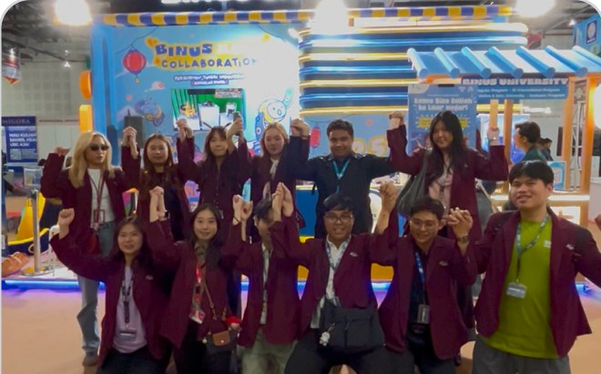
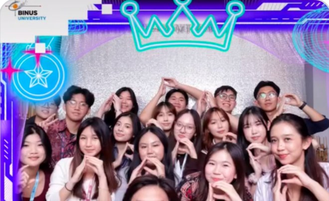
Supported laboratory operations and gave technical guidance during Information Systems practical sessions and assignments.
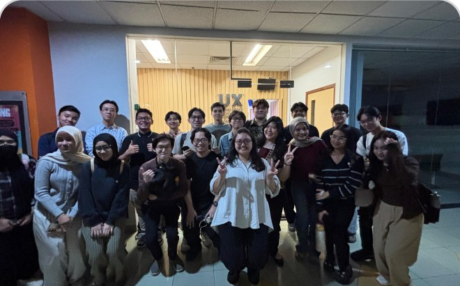
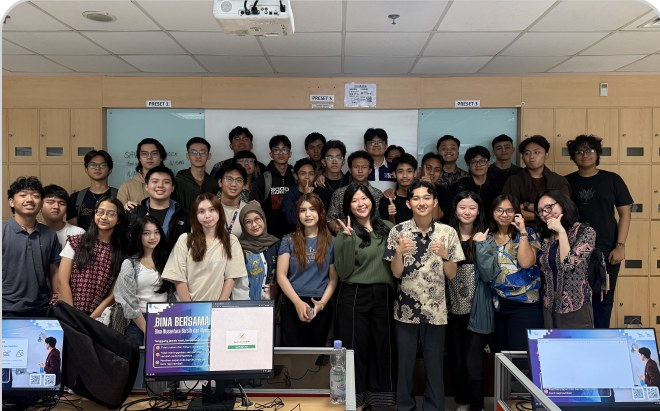
Operated in a fast-paced international environment across front-of-house, café, and inventory logistics roles.
Supported recruitment and initial interviews, and organized employee bonding activities to strengthen team culture.
Campus involvement, curated to the highlights.
Weekly training and intensive discussion sessions to sharpen members' readiness and skills across the competition tracks we compete in — Business Case, UI/UX, and Business Plan.
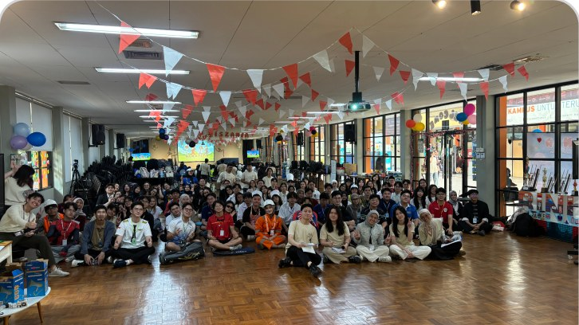
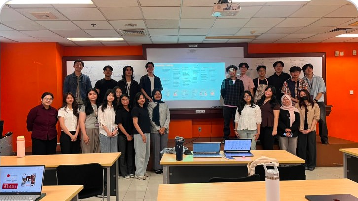
Mentored and guided new Information Systems students through orientation and their first-year transition
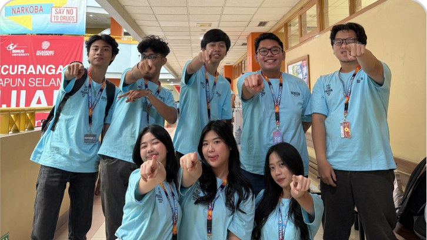
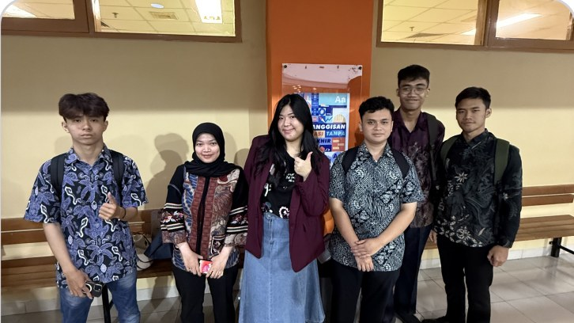
Two years as an active member of Commission 3: Information, the branch of BINUS's Information Systems student body responsible for design, publication, documentation, and hosting across every major department event.
Designed the Instagram feed and story content that carried each event's visual identity, kept publication and documentation running smoothly for a week-long international program, and hosted on stage for five-plus events across the department's biggest showcases.
This is where I found a skill I didn't know I had — being an MC. Two years of design work taught me consistency and visual storytelling, but stepping on stage taught me something the design brief never could: how to hold a room, think on my feet, and stay composed live, in front of an audience.
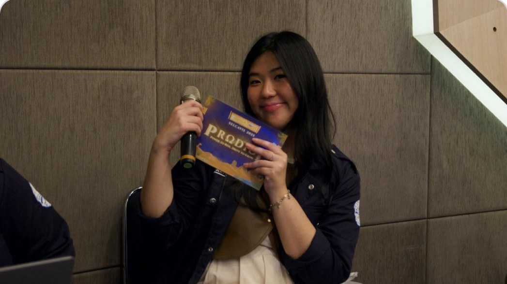
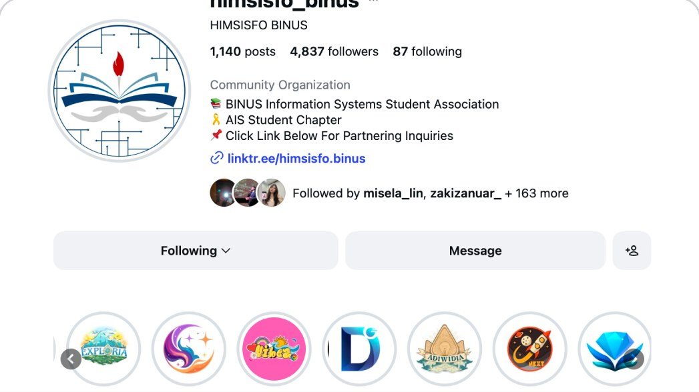
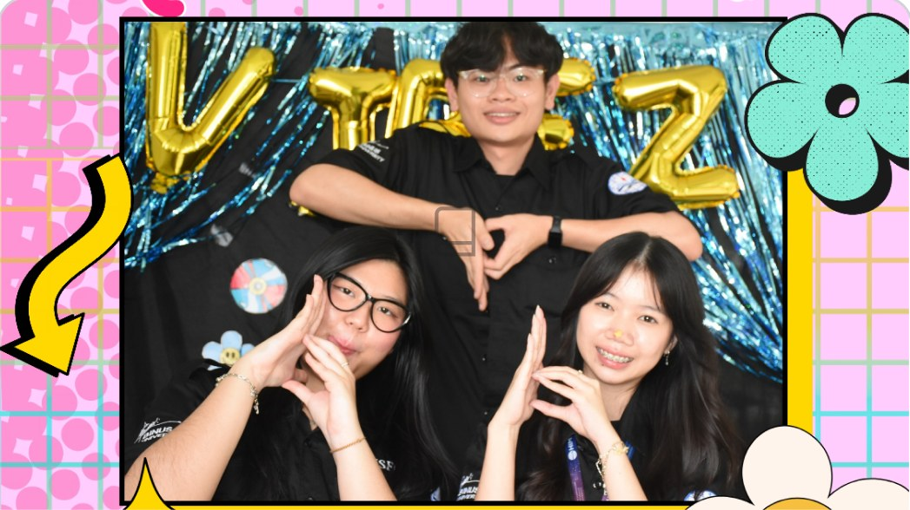
+ several additional staff and volunteer roles across 2024 – 2026
Official certifications, competition honors, and leadership awards — ready for document uploads and verified scans.
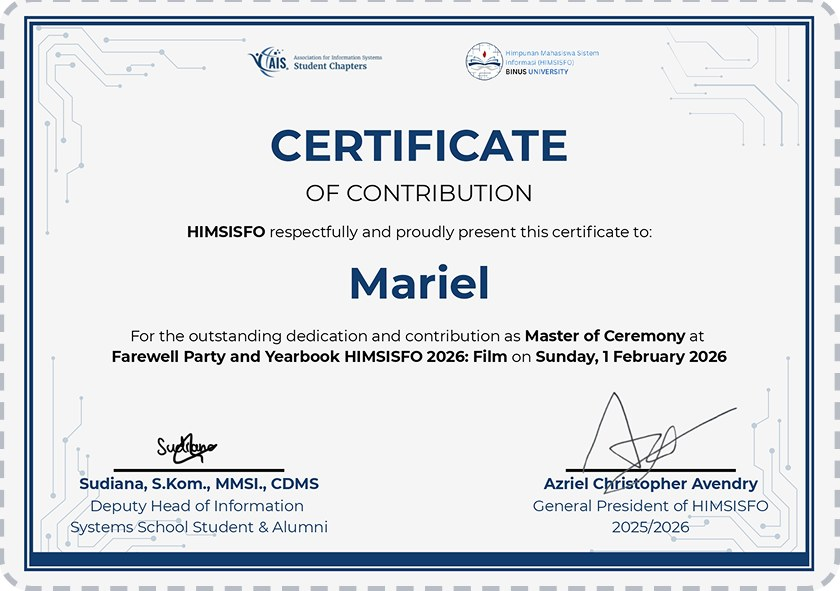
Conferred for dedication as Master of Ceremonies, publication design leader, and coordinator across flagship events.
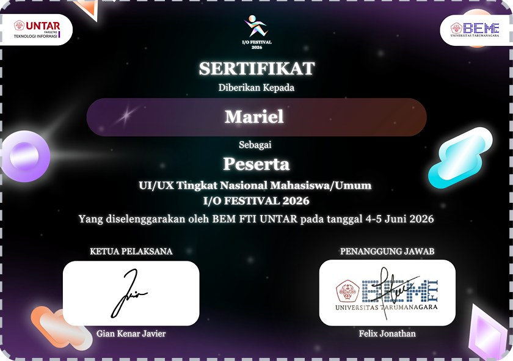
Participant in Good Governance & Civic Tech category for TITU — transit gamification platform.
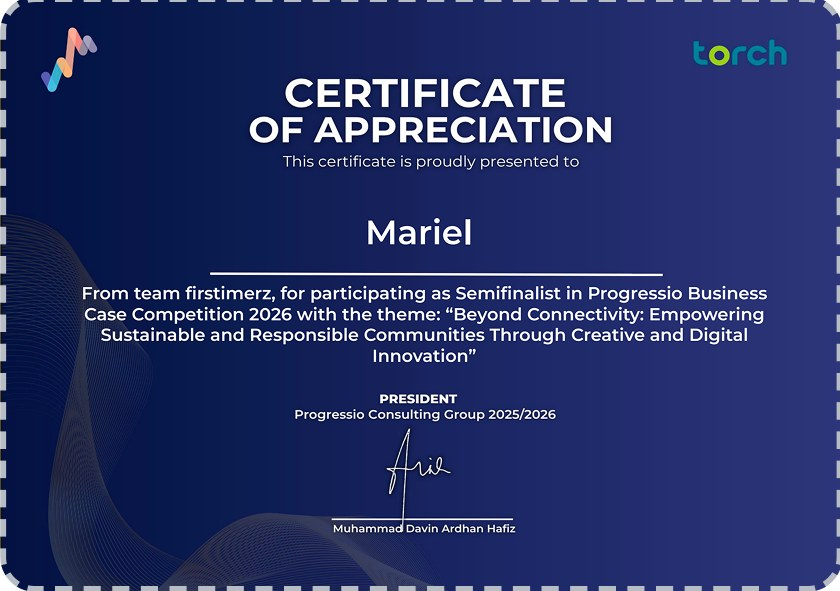
National Business Case semifinalist honor for proposing an A.I.R. IP-collaboration growth strategy for Torch.
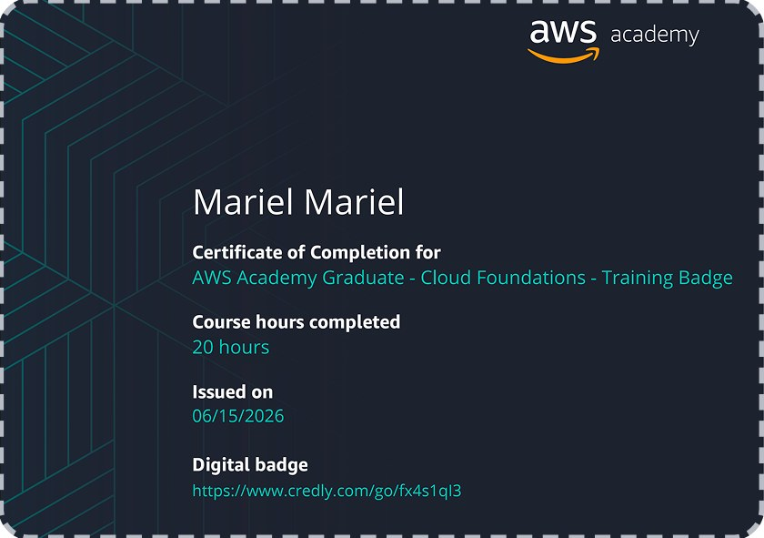
Certified competence in cloud computing architecture, AWS/GCP essentials, IAM policies, and cloud storage orchestration.